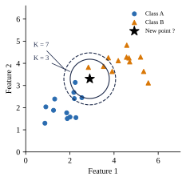
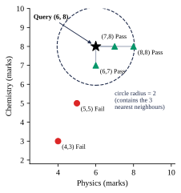
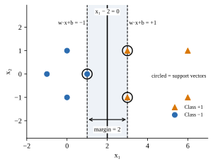
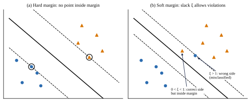
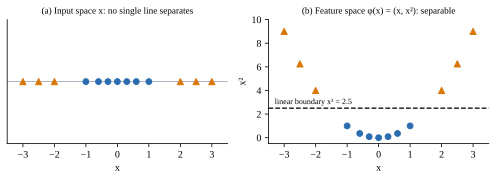
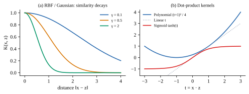

| Measure | Formula | Use |
|---|---|---|
| Euclidean | $d=\sqrt{\sum_i (x_i-y_i)^2}$ | Default for continuous features |
| Manhattan | $d=\sum_i |x_i-y_i|$ | Grid-like data; less sensitive to outliers |
| Minkowski | $d=\left(\sum_i |x_i-y_i|^p\right)^{1/p}$ | p = 1 Manhattan, p = 2 Euclidean |
| Hamming | Number of positions that differ | Categorical / binary features |

| K value | Effect |
|---|---|
| Small (K = 1) | Very flexible, noisy boundary; sensitive to outliers: overfitting (high variance). |
| Large | Smooth boundary, but may ignore local patterns: underfitting (high bias). |
| Rule of thumb | $K\approx\sqrt{n}$, odd; best K is found by cross-validation (elbow of error vs K). |
| Advantages | Disadvantages |
|---|---|
| Simple to understand and implement | Slow prediction: O(n·d) distance computations per query |
| No training time; new data can be added at once | Needs to store the whole training set (memory heavy) |
| Naturally handles multiclass problems | Sensitive to irrelevant features, scaling and noise |
| Non-linear boundaries without any model assumption | Choosing K and the distance metric is not automatic |
Applications: recommendation systems (similar users), handwriting and image recognition, medical diagnosis from similar patients, credit scoring, and imputing missing values.
| Student | Physics (marks) | Chemistry (marks) | Result |
|---|---|---|---|
| S1 | 4 | 3 | Fail |
| S2 | 6 | 7 | Pass |
| S3 | 7 | 8 | Pass |
| S4 | 5 | 5 | Fail |
| S5 | 8 | 8 | Pass |
Query point: Q = (Physics, Chemistry) = (6, 8); K = 3.
| Student | (P, C) | Calculation | Distance | Result |
|---|---|---|---|---|
| S1 | (4, 3) | $\sqrt{(6-4)^2+(8-3)^2}=\sqrt{4+25}=\sqrt{29}$ | 5.385 | Fail |
| S2 | (6, 7) | $\sqrt{(6-6)^2+(8-7)^2}=\sqrt{0+1}=\sqrt{1}$ | 1.000 | Pass |
| S3 | (7, 8) | $\sqrt{(6-7)^2+(8-8)^2}=\sqrt{1+0}=\sqrt{1}$ | 1.000 | Pass |
| S4 | (5, 5) | $\sqrt{(6-5)^2+(8-5)^2}=\sqrt{1+9}=\sqrt{10}$ | 3.162 | Fail |
| S5 | (8, 8) | $\sqrt{(6-8)^2+(8-8)^2}=\sqrt{4+0}=\sqrt{4}$ | 2.000 | Pass |
| Rank | Student | Distance | Result | In K = 3? |
|---|---|---|---|---|
| 1 | S2 (6, 7) | 1.000 | Pass | Yes |
| 2 | S3 (7, 8) | 1.000 | Pass | Yes |
| 3 | S5 (8, 8) | 2.000 | Pass | Yes |
| 4 | S4 (5, 5) | 3.162 | Fail | No |
| 5 | S1 (4, 3) | 5.385 | Fail | No |
S2 and S3 are tied at distance 1; both are inside the top 3, so the tie does not affect the result.

| K | Neighbours | Votes | Prediction |
|---|---|---|---|
| 1 | S2 (or S3, tied) | Pass 1 | Pass |
| 3 | S2, S3, S5 | Pass 3, Fail 0 | Pass |
| 5 | All | Pass 3, Fail 2 | Pass |
Class +1: (3, 1), (3, −1), (6, 1), (6, −1). Class −1: (1, 0), (0, 1), (0, −1), (−1, 0).

A hard margin SVM requires every training point to be correctly classified and to lie outside the margin: $y_i(w\cdot x_i+b)\ge1$. It works only when the data is perfectly linearly separable. A single outlier or overlapping point either makes the problem impossible or forces a very narrow, badly placed margin.

| Value of ξᵢ | Position of the point | Example: ξ = max(0, 1 − y·f(x)) |
|---|---|---|
| ξ = 0 | Correct side, on or outside the margin | y·f(x) = 1.8 → ξ = 0 |
| 0 < ξ ≤ 1 | Correct side, but inside the margin | y·f(x) = 0.4 → ξ = 0.6 |
| ξ > 1 | Wrong side of the hyperplane (misclassified) | y·f(x) = −0.5 → ξ = 1.5 |
| Basis | Hard Margin SVM | Soft Margin SVM |
|---|---|---|
| Data requirement | Must be perfectly linearly separable | Works with overlapping / noisy data |
| Constraint | $y_i(w\cdot x_i+b)\ge1$ | $y_i(w\cdot x_i+b)\ge1-\xi_i,\ \xi_i\ge0$ |
| Objective | $\min \tfrac12\lVert w\rVert^2$ | $\min \tfrac12\lVert w\rVert^2+C\sum\xi_i$ |
| Misclassification | Not allowed | Allowed, with a penalty |
| Slack variables | None | One ξᵢ per point |
| Parameter C | Not used (equivalent to C = ∞) | Controls the margin vs error trade-off |
| Outliers | Very sensitive; one outlier can ruin it | Robust |
| Margin | Narrow | Wider |
| Generalisation | Can overfit | Usually better on real data |
| Dual constraint | $\alpha_i\ge0$ | $0\le\alpha_i\le C$ |
A linear SVM can only draw a straight hyperplane. Many datasets (XOR, concentric circles) are not linearly separable in the input space, but become separable after mapping them to a higher-dimensional feature space with a function φ(x).

Verification example: for $x=(1,2)$, $z=(2,3)$ and $\phi(v)=(v_1^2,\sqrt2\,v_1v_2,v_2^2)$:
The kernel $(x\cdot z)^2$ gives the 3-D dot product using only the 2-D inputs. A valid kernel must satisfy Mercer's condition (its kernel matrix must be symmetric positive semi-definite).
| Kernel | Formula | Example value | Description / use |
|---|---|---|---|
| Linear | $K=x\cdot z$ | 8 | No mapping; for linearly separable or high-dimensional sparse data such as text. |
| Polynomial | $K=(\gamma\,x\cdot z+r)^d$ | γ = 1, r = 1, d = 2: (8 + 1)² = 81 | Captures feature interactions up to degree d; curved boundaries; used in image processing. Large d can overfit. |
| Radial Basis Function (RBF) | $K=\exp(-\gamma\lVert x-z\rVert^2)$ | γ = 0.5: e−1 = 0.368 | Value depends only on the distance between points: 1 for identical points, falls towards 0 as they move apart. Maps to an infinite-dimensional space; the default, most widely used kernel. |
| Gaussian | $K=\exp\!\left(-\dfrac{\lVert x-z\rVert^2}{2\sigma^2}\right)$ | σ = 1: e−1 = 0.368 | The RBF kernel written with the width σ of a Gaussian bell; identical to RBF with $\gamma=1/(2\sigma^2)$. Small σ gives a wiggly boundary, large σ a smooth one. |
| Sigmoid | $K=\tanh(\gamma\,x\cdot z+r)$ | γ = 0.1, r = 0: tanh(0.8) = 0.664 | Same activation as a neural-network neuron, so an SVM with it behaves like a two-layer perceptron. Not positive semi-definite for all γ, r, so less commonly used. |

"Radial basis" means any kernel that depends only on the distance ‖x − z‖. The Gaussian is the most common radial basis kernel, so in practice "RBF kernel" and "Gaussian kernel" refer to the same function written with γ or σ. Another radial kernel is the Laplacian, $\exp(-\lVert x-z\rVert/\sigma)$.